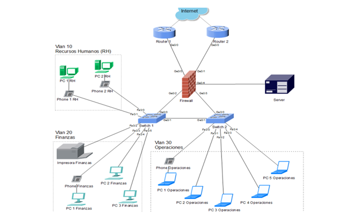

Bienvenidos a Internet para Todos
Resguardo Indigena y sus alrededores
Los indígenas kankuamos habitamos desde tiempos remotos la Sierra Nevada de Santa Marta, compartimos en este gran territorio, la historia ancestral y nuestra cosmovisión del mundo con los pueblos indígenas Kogui, Arhuaco y Wiwa. Los cuatro pueblos estamos comprometidos con guardar el equilibrio natural de la Sierra Nevada y la tradición de nuestros pueblos, por esto nuestra tradición oral nos dice que “los Kankuamos somos los guardianes de la Sierra y los otros tres pueblos: Kogui, Arhuaco y Wiwa representan los guardianes de la tradición”1 . Según la cosmovisión indígena, la Sierra Nevada es vista como una gran mesa, donde cada pueblo indí- gena es una pata; si llegase a faltar una se desequilibra la Sierra. Esta concepción posee una fuerte dimensión espiritual y ancestral, ya que los mamos de los otros pueblos indígenas de la Sierra Nevada reconocen a los kankuamos como la pata faltante para el equilibrio de la Sierra: “miren ser kankuamo, eso es la pata que falta, y esa pata tenemos que restituirla”.
Ubicación de los Kankuamos
Los Kankuamos viven al norte de Colombia y comparten la cultura y la tradición con los demás pueblos que cohabitan la Sierra Nevada de Santa Marta, Kággabba, Iku y Wiwa. Según su cosmogonía, cada uno de los pueblos representa “una pata de la mesa”, conformada por la Sierra, y ellos son los guardianes del equilibrio del mundo. "Los indígenas kankuamos habitamos desde tiempos remotos la Sierra Nevada de Santa Marta, compartimos en este gran territorio, la historia ancestral y nuestra cosmovisión del mundo con los pueblos indígenas Kogui, Arhuaco y Wiwa. Los cuatro pueblos estamos comprometidos con guardar el equilibrio natural de la Sierra Nevada y la tradición de nuestros pueblos, por esto nuestra tradición oral nos dice que “los Kankuamos somos los guardianes de la Sierra y los otros tres pueblos: Kogui, Arhuaco y Wiwa representan los guardianes de la tradición”1 . Según la cosmovisión indígena, la Sierra Nevada es vista como una gran mesa, donde cada pueblo indí- gena es una pata; si llegase a faltar una se desequilibra la Sierra. Esta concepción posee una fuerte dimensión espiritual y ancestral, ya que los mamos de los otros pueblos indígenas de la Sierra Nevada reconocen a los kankuamos como la pata faltante para el equilibrio de la Sierra: “miren ser kankuamo, eso es la pata que falta, y esa pata tenemos que restituirla”." (OIK. Página web oficial).
Objetivos
Desarrollar un sistema de infraestructura de redes que garantice significativamente la conectividad y el acceso a Internet en la comunidad del resguardo KanKuamo, garantizando un diseño que permita el análisis detallado de las condiciones iniciales de trabajo y la aplicación de soluciones técnicas apropiadas desde la perspectiva de la ingeniería de sistemas.
Plantamiento del problema
La problemática abordada desde la primera fase consisten en evaluar el porqué de la deficiencia tecnológica en la población del resguardo kankuamo respecto a la cobertura de las empresas que proporcionan servicios como el internet o venta y suministros de equipos tecnológicos como acceso a computadores entre otros por lo que la comunidad presenta deficiencia educacional, comunicativa y aun comercial, lo cual creo que este problema puede ser solucionado desde las ciencias básicas que se están adquiriendo en este proceso de formación. El problema se basa en la falta de conectividad para hacer todos sus procedimientos tanto de comunicación como de negocios y de preparación por la falta de internet en su zona de origen, esto les ha causado estigmatización social por sentirse de alguna manera marginados o aislados del mundo exterior, por consiguiente su calidad de vida ha sido afectada porque estas comunidades viven de la producción de productos típicos de su resguardo y no pueden comercializarlos tampoco han podido acceder a la educación superior en instituciones educativas como la unad y otras universidades por falta de servicios de internet en su zona, porque es una zona de difícil acceso y se necesita una infraestructura física de recepción y distribución de internet tanto al resguardo como también a las diferentes veredas que hacen parte del territorio.
Proyecto de conexión a internet
El resguardo indígena kankuamo es una comunidad que actualmente presenta déficit de desarrollo en todos los ámbitos como el económico, social, entre otros, por no contar con una infraestructura tecnológica de recepción y distribución de internet en su territorio que permita su pleno desarrollo, actualmente para tener el servicio tienen que Bajar de la cierra y otros lugares lejanos, a la ciudad de Valledupar para comprar paquetes que al regresar y utilizarlos presentan fallas por cobertura, perdiendo el dinero, esto no permite promocionar sus productos como mochilas, queso de cabra, vestidos autóctonos de su idiosincrasia entre muchos otros accesorios que hacen para comercializarlos, pero que no pueden promocionarlos y tienen que descender nuevamente a las esquinas de la ciudad para lograr algún negocio de sus productos desde la calle, cosa que se podría optimizar si cuentan con todos los servicios que les ofrece el internet si contaran con la infraestructura adecuada en el lugar donde habitan, en esto consiste el porqué de la deficiencia tecnológica en la población del resguardo indígena kankuamo respecto a la cobertura de las empresas que proporcionan servicios como el internet o venta y suministros de equipos tecnológicos como acceso a computadores entre otros por lo que la comunidad presenta deficiencia educacional, comunicativa y aun comercial, lo cual creo que este problema puede ser solucionado desde las ciencias básicas que se están adquiriendo en este proceso de formación.
¿Desea Adquirir el servicio?
El internet es fundamental para el uso diario de esta comunidad y vender sus productos, estudiar, trabajar, etc. Si desea adquirir el servicio responder el siguiente cuestionario